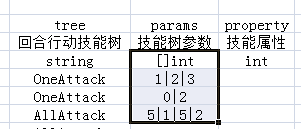
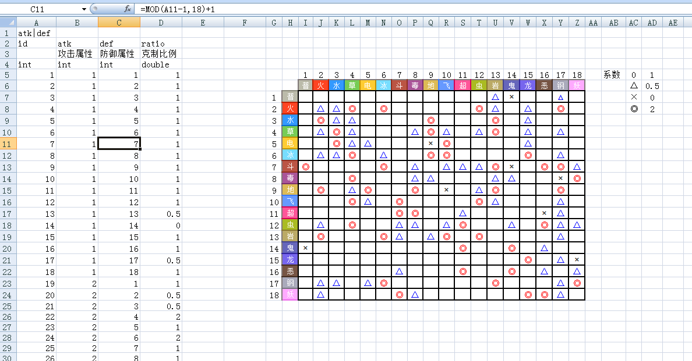
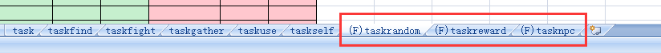
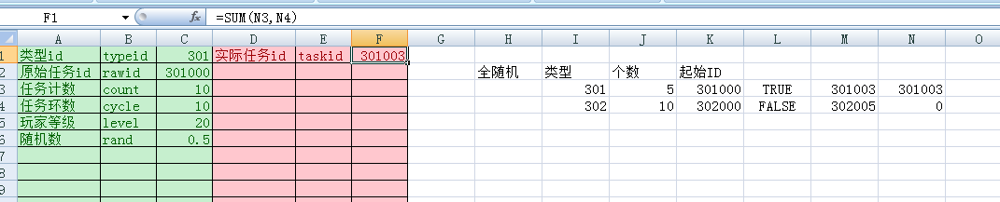
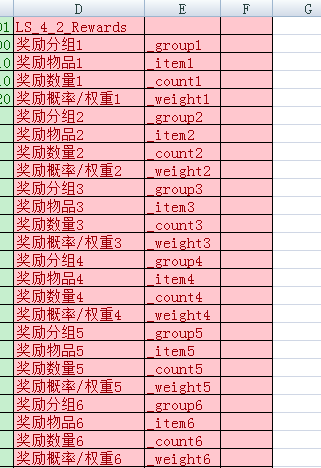

@leviyuan
2017-09-30T07:27:52.000000Z
字数 3709
阅读 96
config
excel表
1、文件名随意
2、sheet名纯小写字母，不同excel文件中的sheet视为同一张表
3、不需要导出的sheet在sheet名加前缀"_"
4、sheet第一行，填写字段名数据分组，可以进行多字段联合分组("|"分隔)，有分组逻辑的数据必须进行分组
5、sheet第二行，字段英文名，不填写留空的列将被过滤掉，不予导出，第一列不可留空，字母全小写
6、sheet第三行，字段中文名
7、sheet第四行，字段类型，int整数（不填默认为0）、string字符串、double浮点数（不填默认为0），在类型前加[]表示字段是数组字段（字段值用"|"分隔）

8、sheet第五行开始是表的数据，首字段不填写或值为0视为无效数据
9、sheet的首字段必须是int类型，并且是全表的唯一索引
10、数据表中可以使用公式，公式也可以跨表引用，默认情况导出时以缓存计算的值为准，如果需要导出时重新计算公式值，讲sheet的名字加到tools/excel_exporter/evaconfig中（每行一个，一般只有引用编辑器导出表时才需要）

excel公式
1、sheet名以(F)开头即标注本页是公式，sheet名的后面部分即为公式名

2、sheet内前三列为输入列，中文名、英文名(纯小写)、默认值
3、sheet内四五六列为输出列，中文名、英文名(纯小写)、公式，英文名以_开头表示这项不直接导出给程序，暂时只有列表输出时使用（参见第10条）
4、sheet内前六列以外的部分也以任意使用（1000行、1000列以内），建议多做中间值，减少输入改变的重算量

5、公式表可以引用其他数据表里的内容，暂时只能通过VLOOKUP
6、sheet内只有数字、是非是有效单元格，字符串类型单元格导出时忽略
7、禁止使用excel本身的随机数，在输入参数可以要求输入一个[0,1)的随机值
8、支持基础运算：加+, 减-, 乘*, 除/, 乘方^
9、excel公式支持 IF、 POWER、 FACT、 MOD、 MAX、 MIN、 ROUND、 ROUNDDOWN、 ROUNDUP、 不使用矩阵的SUM、 以其他表id列做索引的VLOOKUP
10、输出部分可以列成组，用LS_[itemCount]_[mainIndex]_[name]标识开头，用LE_[name]标识结尾;itemCount代表这一组中的每一项有多少个值，mainIndex代表这个几个值中第几个值是关键数据，关键数据为0代表这一项无效，示例如下：

// 假定数据结构是这样的class Config{public int id;public string a;public string b;public int c;public Config(int id, string a, string b, int c){this.id = id;this.a = a;this.b = b;this.c = c;}}static void buildindex(){// 所有数据都以id作为唯一主键Dictionary<int, Config> datas = new Dictionary<int, Config>();// 列举4条测试数据Config c1 = new Config(1, "A", "小猪", 1);Config c2 = new Config(2, "A", "小猫", 2);Config c3 = new Config(3, "B", "小猪", 2);Config c4 = new Config(4, "B", "小猫", 1);// 配置表中的数据默认都会添加在这个datas里面foreach (var c in new Config[] { c1, c2, c3, c4 })datas.Add(c.id, c);// 构建索引// 索引 a|b 的生成Dictionary<string, Dictionary<string, List<int>>> index_a_b = new Dictionary<string, Dictionary<string, List<int>>>();foreach (var c in datas.Values){if (!index_a_b.ContainsKey(c.a))index_a_b.Add(c.a, new Dictionary<string, List<int>>());if (!index_a_b[c.a].ContainsKey(c.b))index_a_b[c.a].Add(c.b, new List<int>());index_a_b[c.a][c.b].Add(c.id);}// 有了 a|b 这个索引，可以快速查询数据// a的值是“A”的数据，他们的b有哪些值foreach (var item in index_a_b["A"])Console.WriteLine("a=A，b=" + item.Key + ", 有这些条配置（id列表）" + item.Value);// 直接查找a=A,b=小猫的数据条目Console.WriteLine(index_a_b["A"]["小猫"]);// 这里是个List<int> 满足条件的id列表}
查找数据
-- 获取一张表local sheet = datasheet.get("role")-- 根据id在role表查找一条数据local config = sheet:get(id)-- 根据索引查找数据-- 如果是唯一索引并且确定索引存在，可以直接通过索引拿到这条配置local config = sheet:getconfig("type|subtype", 1, 2) --找到type=1，subtype=2的一条数据-- 如果索引不是唯一索引，直接使用getconfig会报错-- 通过hasconfig可以进行唯一索引判定local has, config = sheet:hasconfig("type|subtype", 1, 2)-- 如果不是唯一索引，需要使用getgroup接口local configids = sheet:getgroup("type|subtype", 1, 2)for _, id in ipairs(configids) dolocal config = sheet:get(id)end-- [[getgroup的另外一种用法前面在使用getgroup时候，索引中键的数量与索引值的数量都是相等的不相等的时候，返回的不是数组形式table，是key-value形式的key是下一个索引键的值，value是下一级的table]]local type1configs, count = sheet:getgroup("type|subtype", 1)print("在 type|subtype 索引中，type值为1时，有" .. count .. "种不同的subtype值")for subtype, ids in pairs(type1configs) dofor _, id in ipairs(ids) dolocal config = sheet:get(id)endend
使用公式
-- 新建一个公式local formula = formulasheet.create("taskrandom")-- 修改输入值formula.typeid = 1formula.count = 1formula.rand = 0.2-- 看一下输出结果print(formula.taskid)-- 再修改输入formula.rand = 0.3-- 再看一下输入结果print(formula.taskid)-- 枚举结果，以前面的截图为例local e = formula:enumerator("Rewards")while e.movenext() doprint(e.group, e.item, e.count, e.weight)end
查找数据
// 根据id在role表查找一条数据conf := config.GetRoleTable().Get(id)// 根据索引查找一条数据，限制与lua相同conf := config.GetRoleTable().Get_type_subtype(t, st)// 其他的查询方式，go语言强制类型，不方便封装接口，直接通过Group属性获取sheet的索引数据config.GetRoleTable().Group
使用公式
// 新建一个公式formula := config.NewTaskrandomFormula()// 修改输入值formula.SetTypeid(1)formula.SetCount(1)formula.SetRand(0.2)// 看一下输出结果fmt.Println(formula.GetTaskid)// 再修改输入formula.SetRand(0.3)// 再看一下输入结果fmt.Println(formula.GetTaskid)// 枚举结果，以前面的截图为例e := formula.GetRewardsEnumerator()for e.MoveNext() {fmt.Println(e.Group, e.Item, e.Couint, e.Weight)}